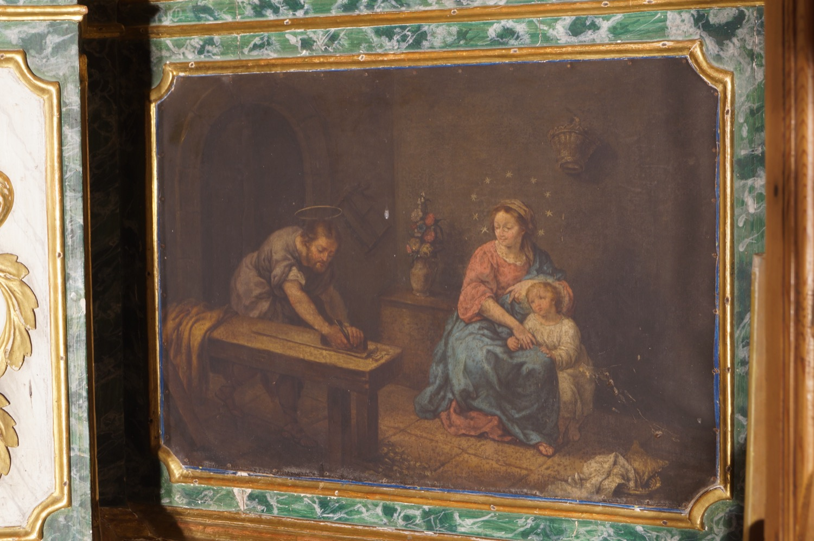

Aquesta pintura mostra una escena familiar de la Sagrada Família. Sant Josep, fuster de professió, hi apareix allisant una peça de fusta amb una plana, mentre la Verge Maria i el Nin Jesús l’observen.
← Tornar